孩子决定做什么
不是统一做标准答案，而是鼓励孩子提出自己的想法：怪兽、漫画、小游戏、学习工具，都可以成为项目。
AI Little Maker · 6-7岁
专为低龄孩子设计的AI启蒙科创课。不是让孩子背概念、学语法，而是用PBL项目式学习，让孩子在“做中学”：大胆想、清楚说、用AI实现自己的小作品。
Why For Young Kids
这个年龄段不适合一上来学复杂编程语法，更适合从表达、想象、提问、描述需求开始。AI小创客课把“会表达”和“会创造”放在前面，让孩子在一次次作品里建立信心。
不是统一做标准答案，而是鼓励孩子提出自己的想法：怪兽、漫画、小游戏、学习工具，都可以成为项目。
孩子用语言描述需求，AI辅助生成图像、故事、声音、程序，老师帮助孩子不断调整和完善。
每节课都有一个PBL小项目，在完成作品的过程中自然学习提示词、表达、逻辑和协作。
从第一次AI对话，到漫画、有声作品、小游戏、原创工具，最终形成孩子自己的AI小创客作品集。
4 Modules
学会和AI高效沟通，理解提示词是什么，知道“说得越清楚，AI做得越好”。
用AI把涂鸦、故事、漫画、声音和数字分身做出来，让想象变成看得见的作品。
用语音编程做真正有用的小工具和有趣的游戏，体验“我说需求，AI帮我实现”。
理解AI的基本原理，学习安全使用AI，并畅想未来想用AI解决的问题。
Achievement Cards
这些项目卡片对应孩子在课程中可能完成的创作方向。家长可以横向滑动查看：从绘画、故事、动画、绘本，到游戏、代码、发明、未来城市设计。
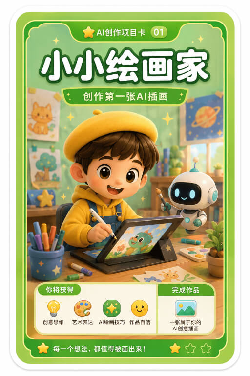
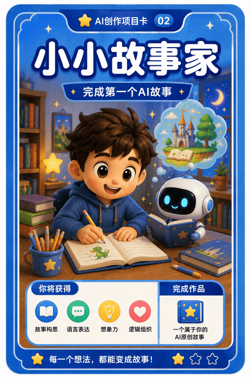
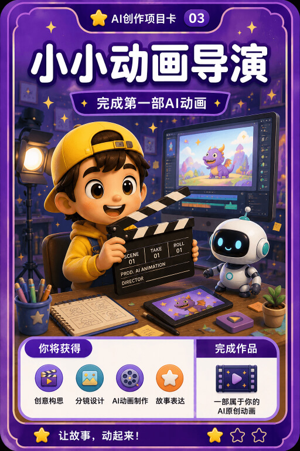
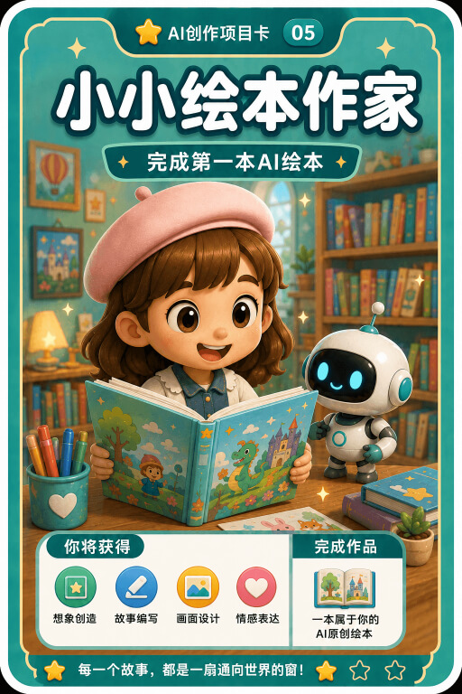
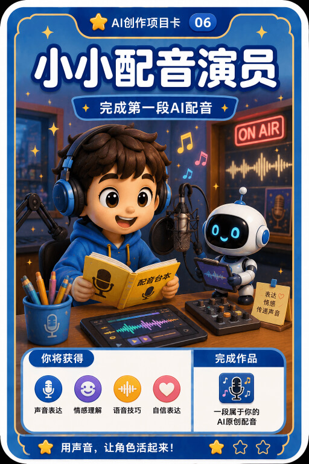
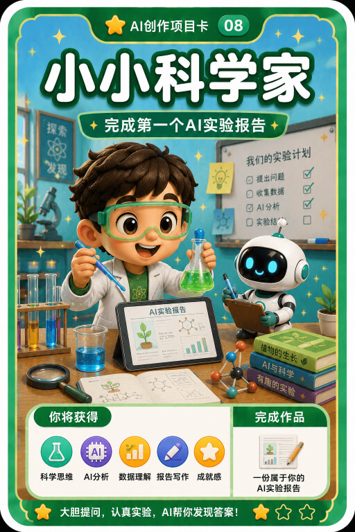
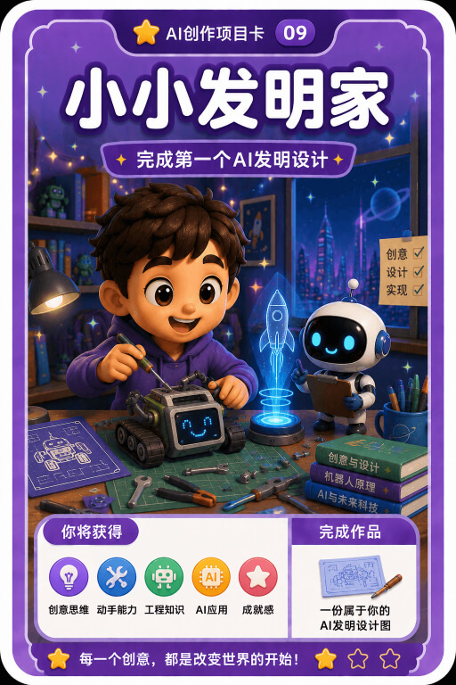
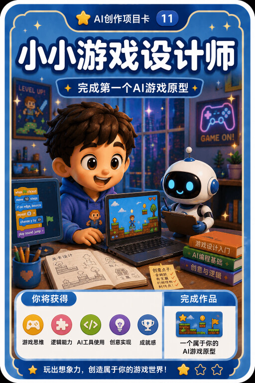
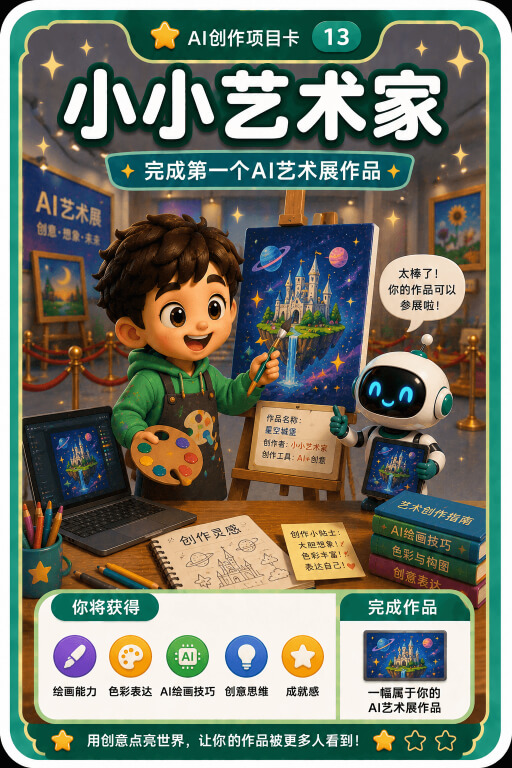
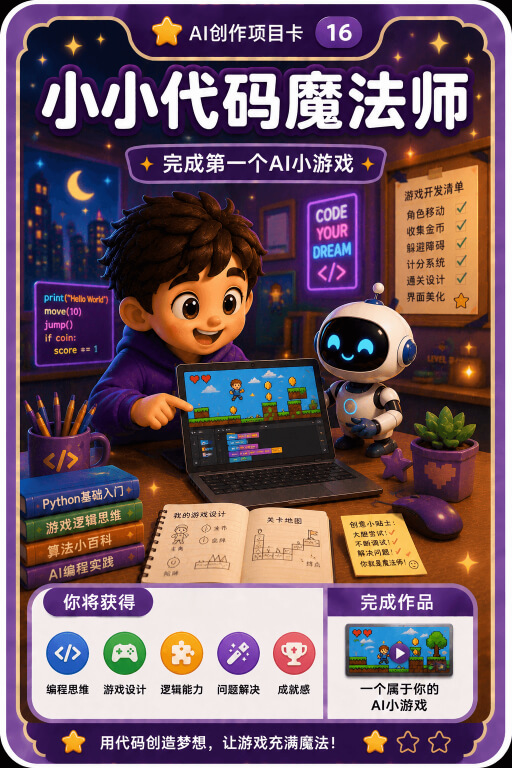
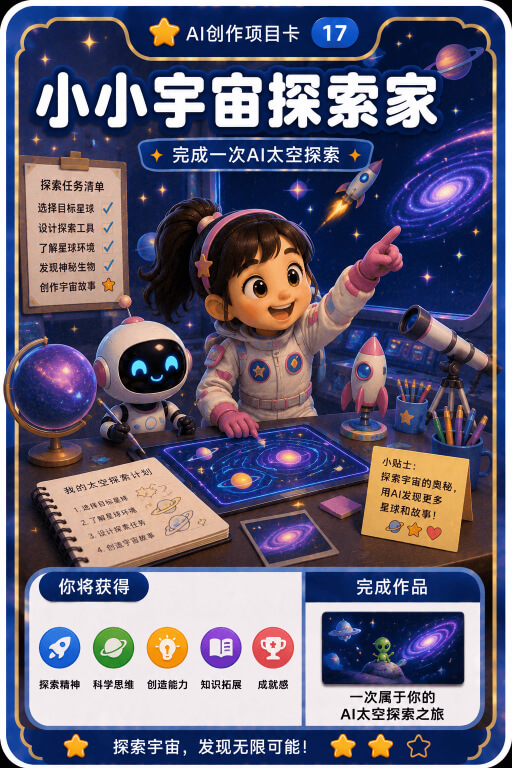
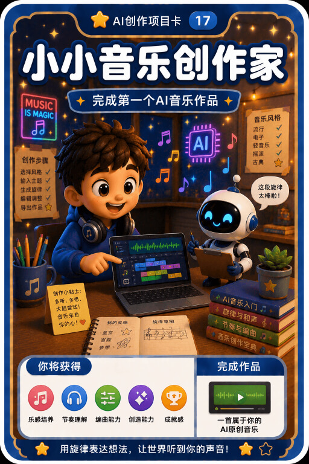
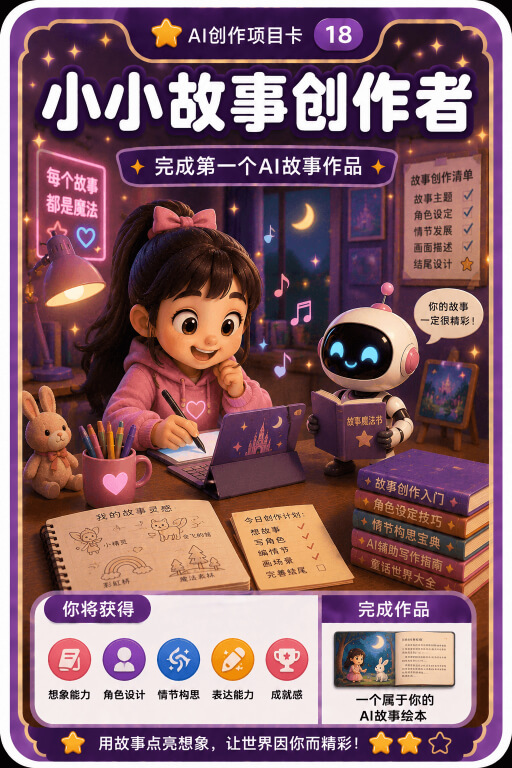
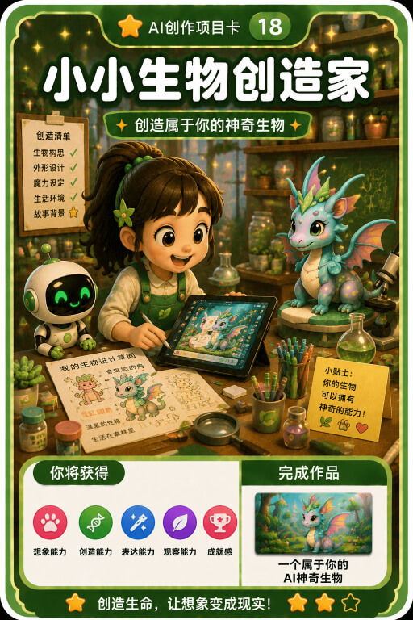
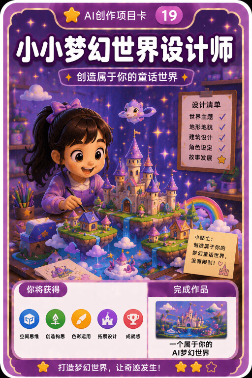
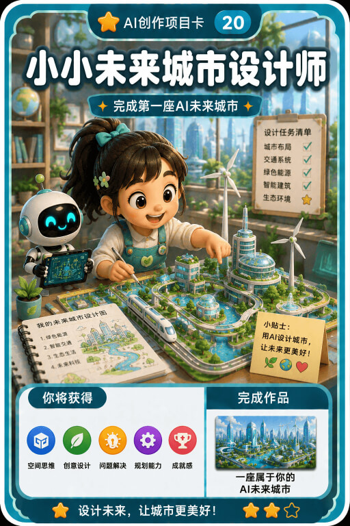
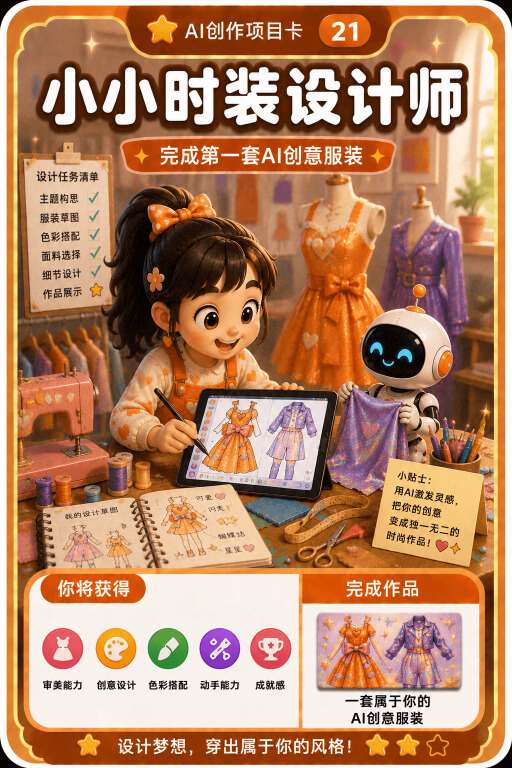
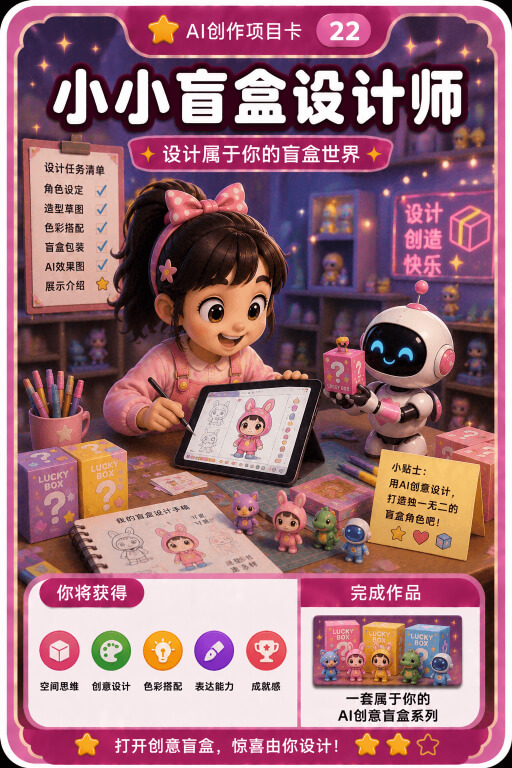
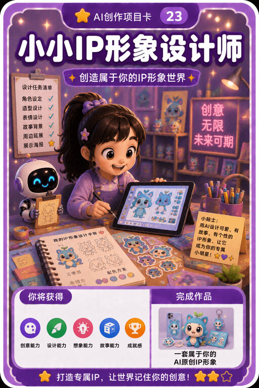
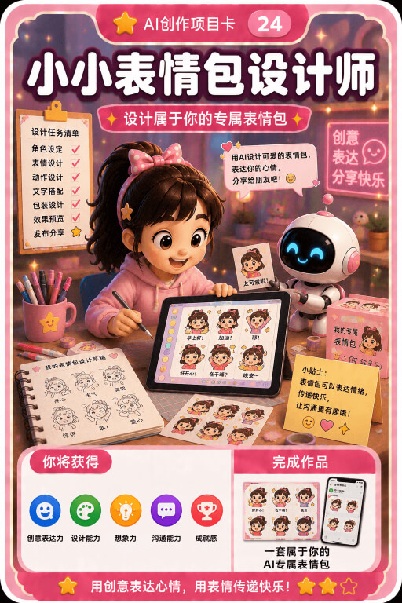
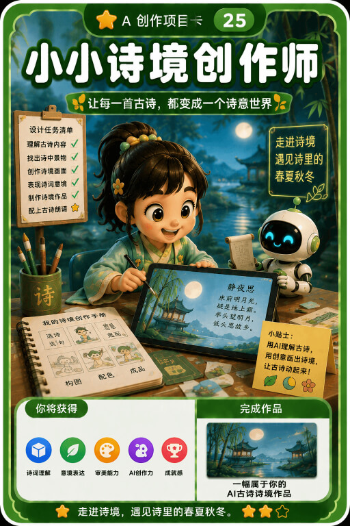
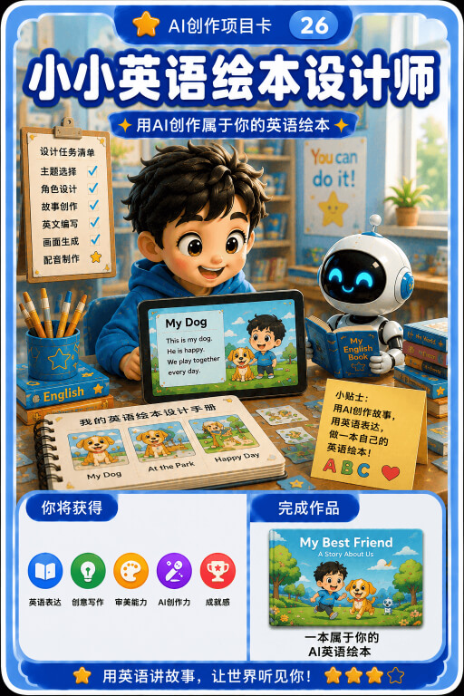
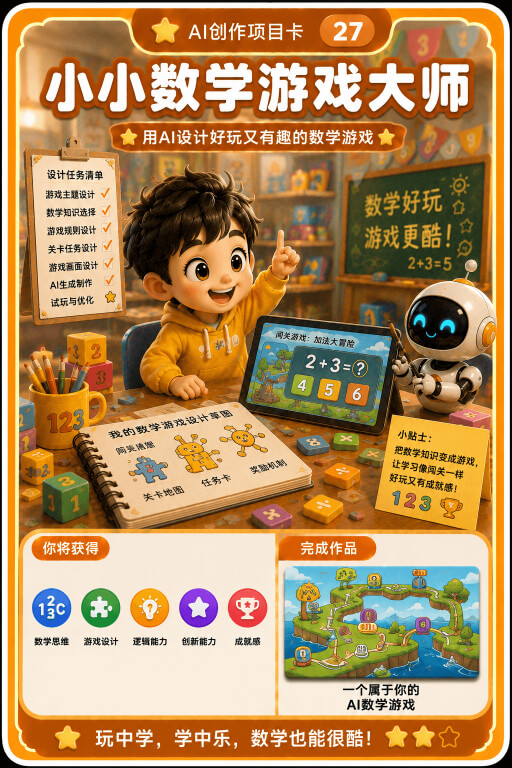
Lesson Plan
课程从对话和提示词开始，逐步进入创意表达、语音编程、小游戏和原创工具。下面是家长最关心的产出路径。
孩子认识AI、学习清晰描述、体验多模态能力，并学会当AI听不懂时如何补充和修改。
孩子从涂鸦、漫画、配音、数字人名片开始，理解如何描述画面、声音、角色和故事。
孩子学习如何描述程序功能、界面布局、交互逻辑、游戏规则和奖励机制。
孩子通过小实验、情景剧和真假图片挑战，理解AI不是万能答案，同时建立隐私和安全意识。
What Makes It Different
不是老师灌输，孩子被动跟做；而是孩子提出想法，老师引导，AI帮助实现。
做孩子真正想要的小工具和小游戏，比如键盘学习助手、字母启蒙工具。
未来会表达、会提需求的人，能更好地和AI协作。低龄孩子从“说清楚”开始。
每节课都有作品，20节课形成一个看得见、可展示、可分享的成长档案。
第18课完全开放：孩子想做什么就做什么，老师不限制，只辅导。
Join Us
可以先沟通孩子年龄、表达能力、识字情况和兴趣方向，我会判断是否适合从AI小创客课程开始。